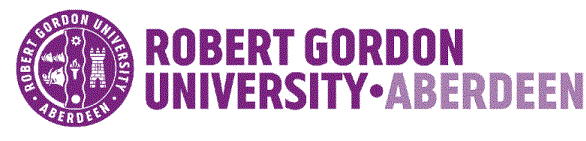
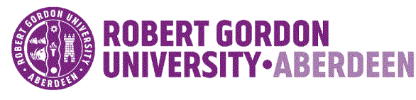

Skills and Achievements
Communication:
Had the responsibility to deal with different kinds of customer enquiries and requests as proprietor. Involved in buying and selling computer equipment, solving network problems and working as an IT administrator to help my customers with their computer needs and increase my business.
Teamwork:
Completed the HNC graded unit. Worked as part of a team to finish our graded unit at the college. Personally worked on a specific task and recommendations from the Group Leader and the result was a great success. Whilst at Blairgowrie Fruit Ltd worked in a team of five, ensuring that all the products met the supermarket requirements and specifications. Our quality control department had the lowest rejection in the last five years.
Business acumen:
Started my own small business to achieve my dreams through hard work and expanded the business to be one of the best computer centres in the city.Special work award certificates from Blairgowrie Fruit Ltd and Coral Beach Resort for my achievements and doing a great job.
Organizational Abilities:
I have the ability to work to deadlines and cope well under pressure which is shown by working twelve hour shifts, six days a week until the end of October to whilst keeping up well my studies and covering my expenses. Finishing my individual graded unit on time using a perfect project management schedule. Provide guidance, instruction, direction also managing a team at my work and organizing their daily duties around the product line.
Hobbies and Interstes
I enjoy playing badminton every week, watching TV with my family and friends, fixing my car, gardening and walking my dog, reading books.